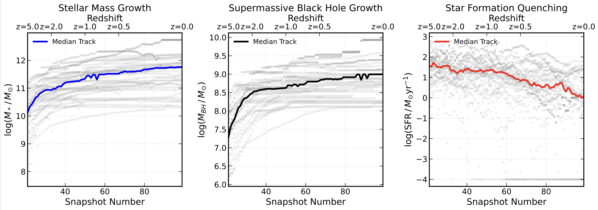
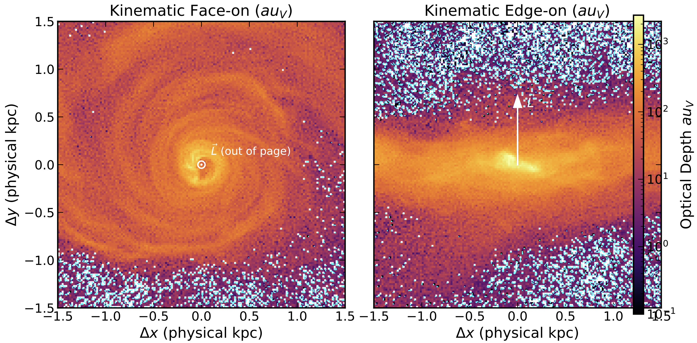

/// Identification
Jashanpreet
Singh.
A convergence of Astrophysics, Machine Learning, and Systems Architecture. I map the morphology of galaxies, decode the Crab Pulsar, and build hardware for the troposphere.
/// Trajectory & Honors
01. Academic
- BSc. Physics (GNDU) 9.10 CGPA
- JEE Mains AIR 231
- Non-Medical (TMS) 84.2%
02. Accolades
- ICNPA Best Presentation 2024
- NSEA Scholar 2023
- IAAC Bronze Honours 2021
03. Systems
- HACKOWASP7.0 Runner Up — ₹1.5L
- GNDU Ideathon Winner — ₹15k
- Languages Python, Julia, R, C++, JS
/// Research & Publications Index


Evolutionary Destiny in Illustris TNG
By tracking their main descendant branches forward to z=0, we predict these early-universe anomalies are the direct progenitors of today's massive Brightest Cluster Galaxies (BCGs). Furthermore, a stacked temporal analysis aligned to the quenching epoch definitively proves that radiatively efficient AGN feedback is responsible for their rapid star-formation cessation.
AUTHORS: JASHANPREET SINGH DINGRA, AKANKSHA KAPATHIA
▶ MAX PLANCK INSTITUTE OF ASTRONOMY (MPIA) • HEIDELBERG, GERMANY
Automated Morphological Classification
An open-source Python package for comprehensive galaxy analysis integrating ML and statistical methods for photometry and spectral analysis.
AUTHORS: J. SINGH, H. CHAND, M. SUDAN
Disentangling AGN Flux Contribution
Studying AGN flux variability using the PFVG method from COMOS Casata Survey.
AUTHORS: M. SUDAN, J. SINGH, A. SARKAR, H. CHAND
7km Telemetry System
Equipped with accelerometer, gyroscope, temperature sensors for abort system, GPS modules, barometric sensors, and biological slides for toposphere microbial collection.
/// Outreach & Leadership
Global Community
Education Systems
ISRO Space Tutor
Officially recognized Space Tutor by the Indian Space Research Organisation. Educating and mentoring the next generation in space sciences.
Dingrastro Club
Founder of a global astronomy community. Active member of 7+ astronomy clubs worldwide, fostering international collaboration.
IAAC Ambassador
Global Ambassador and Bronze Honours recipient for the International Astronomy and Astrophysics Competition.
Physics Club Tech Head
Leading technical operations and event organization for the Guru Nanak Dev University Physics Club.
Social Work & Heroism
Recognized by the Municipal Commissioner for heroically saving a child during a bus accident. Active member of the Art of Living's Punjab Flood Relief Team, demonstrating a commitment to human welfare alongside scientific pursuit.